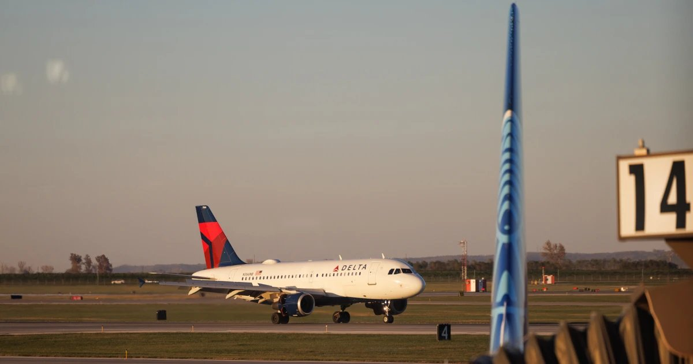
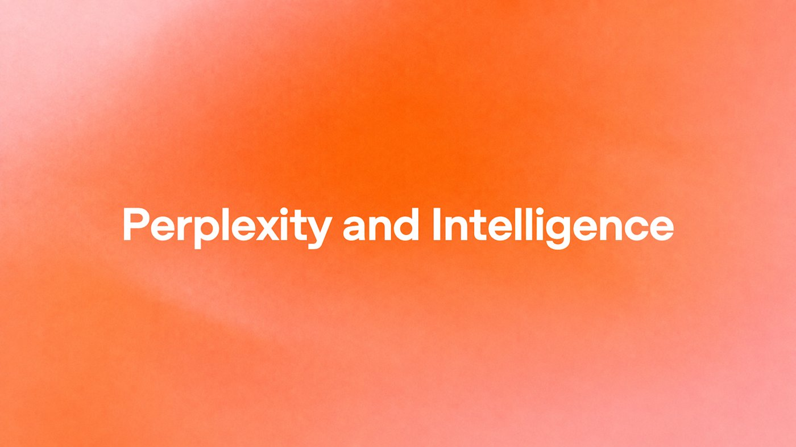
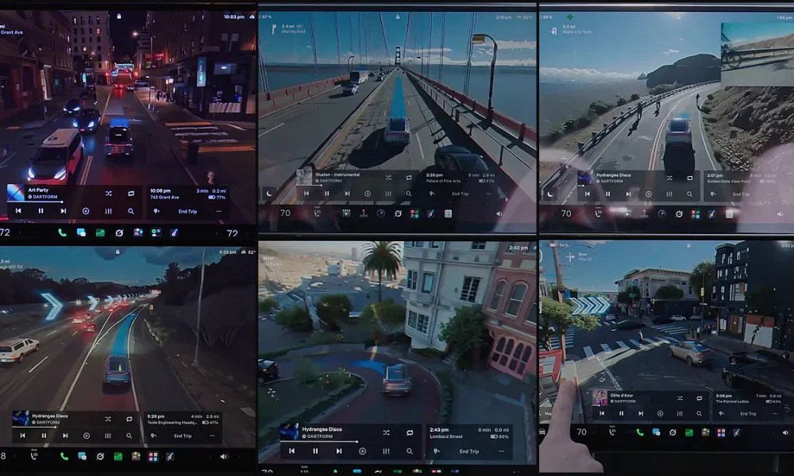
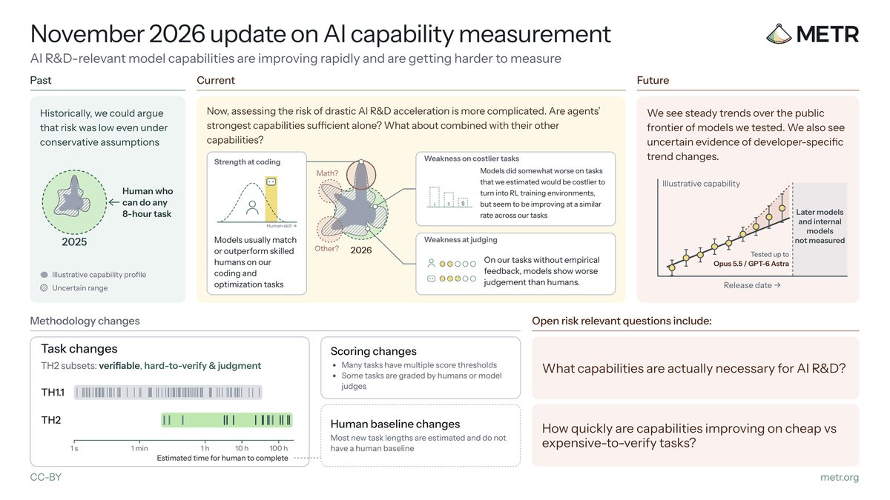
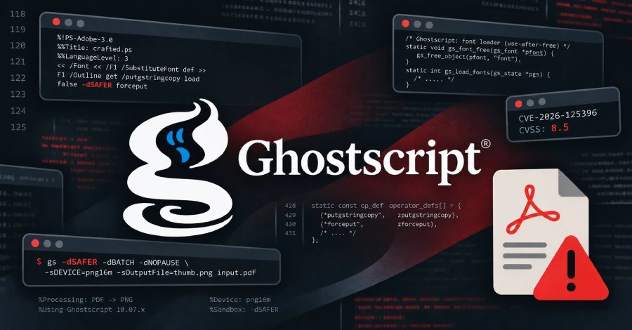
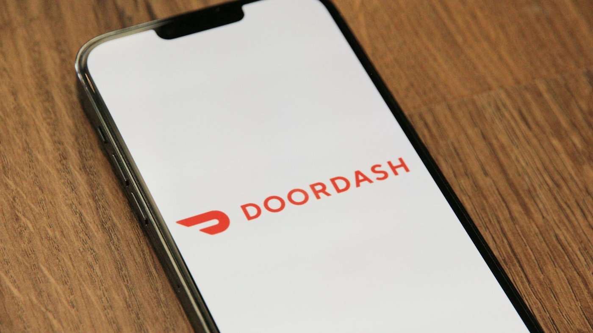
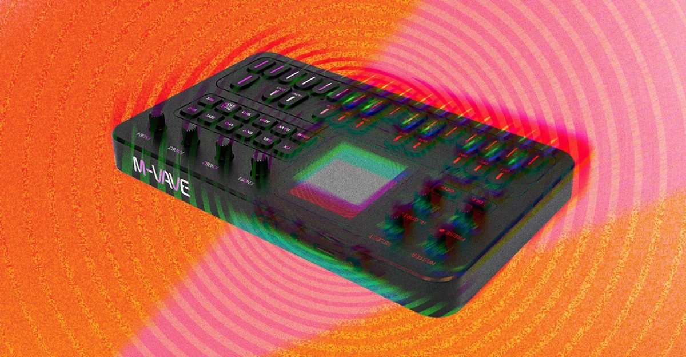

NBC News 引述 FlightAware（截至美東 16:00）
進出亞特蘭大延誤／取消
逾1,100班延誤
截至美東十六時，進出亞特蘭大已延誤逾一千一百班、取消三十六班。這是樞紐數字，不是全國總數，不可與 ABC 引述的全國逾一千六百班合併。
效力：FlightAware 亞特蘭大樞紐統計，分源單列。
2026年11月23日 · 星期一科技要聞
達美配重系統在感恩節前夕停機，亞特蘭大樞紐逾千航班延誤，航空公司說不是黑客攻擊。印度反對黨青年翼衝擊 Meta 辦公室，平台在最大市場執行三小時下架令。Tesla 把 FSD 第十五版的路面畫成即時生成影像。阿波羅估算人工智能投資已撐起美國近三分之二增長，OpenAI 首席科學家則用困惑度寫了一份沒有執法機制的速度限制。
人物：The Register
當日百分之四十九延誤超過十五分鐘；達美稱不是黑客攻擊，系統約於美東十五時三十分恢復 ABC News 引述達美；恢復時間並見 USA Today

感恩節前一週，航空業的電腦像約好了一起請假。十一月十三日，聯邦航空局空管網絡出技術問題，全美一度地面停飛；十六日聯合航空系統故障，機師公會說飛行員拿不到最後的飛機配重數據，當日修復。星期日輪到達美：計算總重、重心與載重是否均勻的自動化系統，在全球最繁忙機場之一的亞特蘭大停機。達美說這不是黑客攻擊，改用「手動應變」讓航班安全起飛，系統約在美東十五時三十分恢復。那句「手動應變」才是重點——假期旅行開始的早上，決定客機會不會頭重腳輕的計算，暫時變回人算。
數字因截止時間而異，不要混成一筆。美國廣播公司引述達美：全國逾一千六百航班延誤，當日百分之四十九延誤超過十五分鐘。國家廣播公司新聞引述 FlightAware：截至美東十六時，進出亞特蘭大已延誤逾一千一百班、取消三十六班；達美稱約七成與這次故障有關，其餘歸於東北天氣與空管限制。Cirium 統計，達美當日自美國出發取消百分之四、共二百零二班，準點率只有五成。
《The Verge》同日把畫面拉寬：過去一週還有 Outlook 連續多日落機、摩根大通故障。國家情報總監杰伊·克萊頓對 CNN 說，技術與運算每次台階式躍進，「路上都會有顛簸。」微軟總裁布拉德·史密斯對 CBS 更重：未來數月都要作準備，「全球資訊基礎設施實際上正在被升級。」他說人工智能讓找漏洞變容易，可用來修，也可用來攻。《The Verge》寫過去一週若干中斷「被認為」由網絡攻擊引起——但達美這一次，公司寫明不是黑客。把所有停機寫成同一場戰爭，是懶惰。把不能出錯的配重交給單一自動化系統，再在感恩節前夕用人手補位，才是這一行最老的劇本：電腦會處理的，直到它不處理，拿夾紙板的人要來收攤。
NBC News 引述 FlightAware（截至美東 16:00）
進出亞特蘭大延誤／取消
逾1,100班延誤
截至美東十六時，進出亞特蘭大已延誤逾一千一百班、取消三十六班。這是樞紐數字，不是全國總數，不可與 ABC 引述的全國逾一千六百班合併。
效力：FlightAware 亞特蘭大樞紐統計，分源單列。
USA Today
亞特蘭大延誤與故障關聯占比
1,169班
USA Today 寫系統約於美東十五時三十分恢復，亞特蘭大延誤一千一百六十九班；達美稱約七成與這次故障有關。一千一百六十九與 FlightAware「逾一千一百」是不同來源、不同口徑，不可寫成同一筆。
效力：USA Today 亞特蘭大數字與關聯占比，分源單列。
Cirium
自美國出發的取消與準點率
202班取消
達美當日自美國出發取消百分之四、共二百零二班，準點率只有五成。這是 Cirium 的全國出發統計，不可與 ABC 全國延誤數或亞特蘭大樞紐延誤數加總。
效力：Cirium 取消班次與準點率，分源單列。
聯邦航空局曾短暫限制飛往亞特蘭大的達美及其支線航班。此為額外限制，不是上述任何一組延誤或取消數字的加總。
來源：NBC News；ABC News；USA Today；The Verge（亞特蘭大稿）；The Verge（後續評論）。圖源：Nikos Frazier／Omaha World-Herald via Getty（NBC News）。《The Verge》寫過去一週若干中斷「被認為」由網絡攻擊引起，只是媒體表述；達美這一次公司已排除黑客，不可把各次停機寫成同一場攻擊。
人物：Margrethe Vestager
在用戶數最大的市場裡，Meta 不只是平台，它是開關。星期五，印度主要反對黨國大黨的青年翼，在海得拉巴衝進存放 Meta 辦公室的大樓，與警察衝突；在孟買往外牆噴漆，並在古魯格拉姆示威。導火線是其領袖的 Instagram 帳戶被下架。抗議後有兩個帳戶恢復；青年翼的 Manu Jain 告訴路透，仍有「數千個」批評政府的記者、創作者與網紅帳戶受限。那是當事人的指控，不是獨立審計。Meta 拒絕評論週五示威，並一直表示在印度限制內容是為了遵守當地法律。
門神的權力，從這裡看得更清楚。莫迪政府稱，只有在違法或可能危害公共安全、國家安全時才下令下架。半島電視台與路透轉述：今年二月，印度把平台接到通知後的移除時限從三十六小時改成三小時；《印度快報》報道，三月至七月向 Instagram、Facebook 與 YouTube 發出近十九萬五千道封鎖令。Meta 自己的披露更刺眼：二零二六年上半年，它在印度依據當地法律限制逾五百四十萬則帖文或帳戶，而二零二五年全年約七萬；公司稱多數是「依法有義務主動限制」的個案。印度是 Meta 以用戶計的最大市場。青年翼發出七日最後通牒，要求解釋有多少帳戶因政府命令被扣。這些要求尚未被獨立核實，Meta 也未公開答覆。
把公共廣場和執法開關握在同一隻手裡，用戶沒有另一個可轉向的廣場，只會得到一隻更快的手。衝擊辦公室不是競爭法上的救濟。但當下架時鐘被收成三小時，平台既執行國家命令，又用「主動限制」把規模從七萬推到五百四十萬，這已經不是中立的管道，而是看門人。一個離不開、又無法轉換的市場，正是指定守門人的理由：不是因為有人上街，是因為開關已經被集中。
仍有「數千個」批評政府的記者、創作者與網紅帳戶受限。青年翼的 Manu Jain 告訴路透的指控，不是獨立審計，亦不是 Meta 的承認。
只有在違法或可能危害公共安全、國家安全時才下令下架。莫迪政府的表述，經《衛報》等報道。
在印度限制內容是為了遵守當地法律。Meta 的一貫表述；公司拒絕評論週五示威，並未承認奉執政黨命令審查。
下架時限（半島台引《印度快報》）
3小時
今年二月，印度把平台接到通知後的移除時限從三十六小時改成三小時。這是時限變更，不是帳戶仍受限的審計數字。
封鎖令（三月至七月）
近19.5萬
《印度快報》報道，三月至七月向 Instagram、Facebook 與 YouTube 發出近十九萬五千道封鎖令。半島台轉述；不可與 Meta 披露的限制規模寫成同一筆。
Meta 披露的限制規模
540萬對7萬
二零二六年上半年，Meta 在印度依據當地法律限制逾五百四十萬則帖文或帳戶，而二零二五年全年約七萬。這是公司披露，多數被稱為「依法有義務主動限制」的個案。
來源：The Guardian；Al Jazeera。圖源：Indian Youth Congress／IYC／Reuters（《衛報》）。「數千個帳戶仍受限」僅為青年翼向路透的指控。
人物：Elon Musk
過去三個季度的貢獻，主要由軟件與電腦帶動；這是未扣除進口的總額，國民賬上的淨貢獻可能較小 阿波羅首席經濟學家托爾斯坦·斯洛克，十一月十九日

第一性原理很簡單：如果單一資本開支週期已經扛起大部分增長，所謂人工智能繁榮就不是氣氛，是單點故障。阿波羅首席經濟學家托爾斯坦·斯洛克十一月十九日寫道，過去三個季度，人工智能相關投資為美國實質國內生產總值增長貢獻了約一點三個百分點，大約佔這段時期累計約百分之二增長的百分之六十五，主要由軟件與電腦帶動。他註明這些是未扣除進口的總額，國民賬上的淨貢獻可能較小。即便如此，結論直白：人工智能已是美國經濟增長的第一來源；任何人對二零二七年股市與信貸的判斷，其實都在對數據中心建設下賭注。
上週五，同一條交易把標普五百與道指送進回調，納斯達克錄得二零二零年疫情封鎖以來最差的一週——那些收市數字昨日正刊已寫過，今天要盯的是其餘引擎有多細。周末有人拿這輪跌勢跟科網泡沫的圖對讀，那是情緒，不是物理。物理是：增長已經過度集中在同一場興建工程上；工程一旦減速，沒有第二根柱子可以立刻補上。
然後 OpenAI 首席科學家雅各布·帕喬基發表長文，阿爾特曼稱之為「OpenAI 近來最重要的一篇」。他建議用困惑度當各實驗室可共享的速度限制：在監控能力達到某個具體里程碑——例如思維鏈監控器的後繼——之前，不要越過共同門檻。他預計進入約零點六八至零點七的對數困惑度區間，還會再出現變革性能力；至於第一道門檻訂在哪、誰來執行，文中沒有。他自己也列了漏洞：各實驗室用不同數據，難以橫向比較；思維鏈推理不會降低困惑度，卻大幅提高能力；誰也不知道數據固有熵的地板在哪。一條沒有執法機制、沒有共用尺、還被推理能力穿一個洞的速度限制，不是物理，是部落格。若建設已經等於經濟，你需要的是產能與一條能活過現實的度量，不是用損失函數簽署的君子協定。
Apollo Daily Spark（2026-11-19）
佔同期累計約百分之二增長的份額
約65%
約一點三個百分點，大約佔這段時期累計約百分之二增長的百分之六十五。這與「一點三個百分點」是同一估算裡的兩個表述，但口徑不同：一個是貢獻幅度，一個是佔比；兩者都是未扣除進口的總額，不可改寫成淨貢獻。
效力：增長佔比，分源單列；日期為十一月十九日。
OpenAI 首席科學家雅各布·帕喬基
對數困惑度窗口
0.68–0.7
他預計進入約零點六八至零點七的對數困惑度區間，還會再出現變革性能力。文中未訂第一道門檻，也沒有執法機制。本報不採用 TechCrunch 所引 GPT-4 約 0.91 等圖表細節。
效力：帕喬基文中的窗口，不是已實施的速度限制。
同一篇帕喬基長文
門檻與執行
未訂／無執法機制
至於第一道門檻訂在哪、誰來執行，文中沒有。他自己也列了漏洞：各實驗室用不同數據，難以橫向比較；思維鏈推理不會降低困惑度，卻大幅提高能力。
效力：這是建議，不是已落地的共同限制。
來源：Apollo Daily Spark（11-19）；OpenAI；TechCrunch。圖源：同類相關圖，非該則新聞原圖。OpenAI（官方配圖；此為帕喬基文〈Perplexity and Intelligence〉配圖，非阿波羅增長佔比圖表）
人物：Steve Jobs

品味不是渲染。特斯拉開始向早期體驗用戶推送 FSD 第十五版，馬斯克說全面推送會在十二月假期更新。所有人盯着的是 Reality View：從車頂虛擬鏡頭即時生成的駕駛畫面，宣稱讓你「看見並控制 FSD 打算做什麼」。發布說明把它叫做 Tesla Augmented Reality，用端到端可視化取代一堆分開的模型信號，還說更省算力。馬斯克在 X 寫「FSD is GTA irl」，並稱這是即時人工智能視頻生成，「沒有遊戲引擎」，只用 AI4 上一顆 TRIP 加速器的一半。Teslarati 星期六夜收到車機後寫道：紋理驚人，直到碰到路牌，才明顯看出這不是多路鏡頭拼圖；延遲可以感覺到。馬斯克已說，目前延遲偏高是算力所限，有辦法大約再削百分之三十五。儀表板上的電影只是模型相信自己看見的世界，不會比路面更真實。
發布說明還宣稱：升級後並與 Robotaxi、Optimus 共用的視覺編碼器，把「關鍵干預率」改善二十五倍。這是該看的度量，但特斯拉仍然只給倍數，不給底數。《Electrek》指出，若以他們今年較早的數據外推，二十五倍會落到約五萬英里；那不是公司公布的分母。說明裡改善的項目，幾乎就是這套系統最出名的失敗：路牌、坑洞、校區車速。同一份說明還寫，在更高車速的駕駛員檔位上「放寬」監控嚴格程度。漂亮的生成畫面，不能代替一組公開的干預數字。
名稱叫 Full Self-Driving，版本號已經疊到十五，監督責任卻還在人身上。把路面畫成電子遊戲，再把監控放鬆一檔，不是簡約，是把未完成的產品戴上首飾。This is junk——不是因為畫面不夠華麗，是因為華麗被拿來頂替證據。車要先在路上證明自己，儀表板才配得上叫「Reality」。
來源：Electrek；Teslarati 發布說明；Teslarati 試用。圖源：Tesla（Teslarati），為 Reality View 畫面，不是普通車外景實拍。
週一稿，分類精選二十二則，含專題在所屬欄重出的短項。各欄底部為該欄熱度排行；同級熱度依內容包原序。圖源註寫在各卡內文區。
NBC News；並參 ABC、USA Today、The Verge
星期日，達美計算飛機重量與平衡的系統在亞特蘭大停機。美國廣播公司引述達美：全國逾一千六百航班延誤，當日百分之四十九延誤超過十五分鐘，並稱不是黑客攻擊；系統約於美東十五時三十分恢復。國家廣播公司新聞引述 FlightAware：截至十六時，進出亞特蘭大已延誤逾一千一百班。詳見專題。
Nikos Frazier／Omaha World-Herald via Getty（NBC News）
The Guardian；並參半島電視台、路透
國大黨青年翼星期五在海得拉巴、孟買與古魯格拉姆抗議 Instagram 帳戶被下架，並有人衝入海得拉巴大樓。其後兩個帳戶恢復；青年翼向路透稱仍有「數千個」帳戶受限，此為指控而非審計。半島電視台引述：下架時限已改為三小時，今年上半年 Meta 在印度依法限制逾五百四十萬則帖文或帳戶。詳見專題。
Indian Youth Congress／via Reuters（半島電視台）
Electrek；並參 Teslarati
特斯拉向早期體驗用戶推送 FSD 第十五版，並新增 Reality View：從車頂虛擬鏡頭即時生成駕駛畫面。馬斯克稱這是沒有遊戲引擎的人工智能視頻生成，全面推送放在十二月。發布說明宣稱關鍵干預率改善二十五倍，但只給倍數；更高車速檔位則放寬監控。詳見專題。
Tesla（Teslarati）
Apollo；並參 OpenAI 官方、TechCrunch
阿波羅首席經濟學家十一月十九日寫道，過去三個季度人工智能相關投資為美國實質增長貢獻約一點三個百分點，約佔累計約百分之二增長的百分之六十五，惟未扣除進口。他認為對二零二七年市場的判斷其實是在賭數據中心建設。OpenAI 首席科學家建議用困惑度設共同速度限制，但未訂門檻與執法機制。詳見專題。
同類相關圖，非該則新聞原圖。OpenAI（官方配圖；此為帕喬基文〈Perplexity and Intelligence〉配圖，非阿波羅增長佔比圖表）
AWS Security Blog；並參 BleepingComputer
亞馬遜威脅情報寫，攻擊者留下的無認證 Cairn 實例，暴露九月一場針對東亞大學的行動。代理人在 MONAI Label 發現路徑遍歷漏洞，約十一分鐘內走到任意寫檔，其後取得根權限。亞馬遜以中等信心判為中國關聯。對 Redis 與憑證噴射則失敗。BleepingComputer 寫維護者於十一月十八日修復。
同類相關圖，非該則新聞原圖。BleepingComputer（資料圖片；同類相關圖，非該次行動畫面）
The Verge
達美故障同日，《The Verge》彙整過去一週的聯邦航空局全國地面停飛、Outlook 連續落機與摩根大通故障。情報總監克萊頓說，技術每次台階式躍進「路上都會有顛簸」；微軟總裁史密斯說，全球資訊基礎設施正在被升級，未來數月都要作準備。該稿稱若干中斷「被認為」由攻擊引起，達美這一次已排除黑客。
Amelia Holowaty Krales／The Verge
The Verge（轉述《華爾街日報》）
《華爾街日報》在 Anthropic 上市後的阿莫德專題中，引述廣泛流傳的 Slack，指他曾與同事辯論：沉浸式電子遊戲或可緩解人工智能失業帶來的政治衝突。《The Verge》標題寫「安撫大眾」，那是該站用詞，不是原句。稿件沒有把它寫成公司政策或產品計劃。此事屬舊言論再曝光，不是新的政策宣布。
The Verge
OpenAI 官方；並參 TechCrunch
OpenAI 首席科學家帕喬基發表長文，阿爾特曼稱之為公司近來最重要的一篇。他主張用困惑度作為各實驗室可共享的進度尺，並在監控能力達到具體里程碑——例如思維鏈監控器的後繼——之前，不要越過共同門檻。他預計約零點六八至零點七窗口還會再出現變革性能力，但未訂門檻或執法機制。
OpenAI

METR
評估組織 METR 十一月二十日更新稱，在 TH1.1 與 TH2 合併套件上，前沿模型完成任務的時間視野約每三點六個月加倍。它寫，模型在其編程與優化任務上通常追平或勝過受招的熟練人類，而公開證據仍不足以排除未來一兩年出現劇烈的研發加速。評估涵蓋至 Claude Opus 5.5 與 GPT-6 Astra。
METR
The Verge（轉述彭博發現的職位廣告）
彭博發現的蘋果職位廣告描述一套可瀏覽網頁、跨應用操作、寫代碼並調用服務的人工智能代理人；《The Verge》十一月十九日報道後，該廣告已於二十日撤下。職責包括規劃多步任務並協調子代理人，工程師須與 Siri、界面框架及基礎模型團隊合作。這是招聘描述，不是已發布產品，也未在已讀段落出現明確上市時程。
同類相關圖，非該則新聞原圖。Allison Johnson／The Verge（同類相關圖，非該則職位廣告原圖）

The Hacker News；並參 pwn.ai
安全公司 pwn.ai 展示，九月八日已修復的 Ghostscript 漏洞 CVE-2026-125396，仍可經約十個應用的上傳、預覽或列印功能被觸達並繞過沙箱。測試包括匿名列印、郵件附件與部分 WordPress 插件的公開上傳。Artifex 已在 10.08.0 修復；只更新主機，不等於容器內舊副本已被替換。
The Hacker News
BleepingComputer
Cleverbridge 十一月二十日開始通知客戶：十一月四日偵測到異常後，調查確認第三方複製了平台上存放的支付卡資料。BleepingComputer 看到的個別通知列明含卡號、到期日與 CVV／CVC，並稱未複製姓名或帳單地址。公司未公布受影響人數或入侵途徑，並稱不是勒索軟件。
同類相關圖，非該則新聞原圖。BleepingComputer（該稿支付卡封面資料圖）

Hindustan Times（引 Downdetector）
《印度斯坦時報》報道，十一月二十一日 Downdetector 錄得一萬二千七百四十二宗 DoorDash 故障報告，用戶看到應用錯誤、難以瀏覽餐廳或完成訂單。稿件截稿時，公司尚未公開解釋原因或確認總中斷時長。此則以第三方故障追蹤為主證，不是官方事故報告，根因仍未核實。
同類相關圖，非該則新聞原圖。Unsplash／Hindustan Times（同類相關圖，非該次故障畫面）
WIRED
《WIRED》報道，富國銀行將於十一月二十四日生效的新條款寫明，使用任何 AI Agent「風險自負」；摩根大通十月底禁止用憑證登入的第三方代理人，美國銀行警告勿分享登入資料，花旗與 PNC 亦已改條款。亞馬遜曾阻擋 Meta Muse 在其平台下單，聯合航空宣布阻擋個人機器人代買機票。
Getty Images（WIRED）
9to5Mac（引蘋果支援文件）
9to5Mac 引述蘋果支援文件寫，iOS 27 的 Connectivity Assist 會在 Wi-Fi 過慢或幾乎不可用時，改用流動數據保持連線，例子包括後院、車道、咖啡店與機場。作者形容它能避免手機出門時仍緊抓家中微弱 Wi-Fi，導致音樂與地圖遲遲無法啟動。功能可在設定的 Wi-Fi 頁開關。
同類相關圖，非該則新聞原圖。9to5Mac（iOS 27 資料圖片；同類相關圖，非該功能設定原圖）

The Verge
《The Verge》專欄寫，越來越多人直接用 Claude Code 或 Codex 改電視、相機等裝置軟件。印度開發者 Gathin T 用一個半小時去掉小米 Android 電視廣告並重整界面，其後推出的 CleanYourTV 成為熱門代碼庫。稿件強調能力並非全新，但語言模型讓非專業者也能下手；Android 較易。
The Verge
France24／法新社轉述路透；並參路透專稿
法新社等轉述路透獨家：美國證交會正對 Nvidia 的會計與披露展開早期、保密調查，也可能以不提出指控結束。去年公司改以客戶總部而非帳單地址呈報地域收入，新加坡從分類中消失。司法部另在審查其一百二十九億美元收購 Hugging Face 的交易及更廣泛的反壟斷問題。這不是已起訴的指控。
同類相關圖，非該則新聞原圖。Manuel Orbegozo／Reuters（二零二六年十一月十二日輝達聖塔克拉拉總部檔案照片；非該則調查原圖）
Reuters
路透十一月二十日報道，三星電子任命黃尚準為記憶體業務社長，他原先負責包括高頻寬記憶體在內的開發。趙相淵出任 System LSI 負責人，李鍾明任器件解決方案部門技術長；全永鉉繼續主管更廣的器件解決方案部門。路透並寫，三星第三季芯片利潤同比上升十五倍。
同類相關圖，非該則新聞原圖。Jeenah Moon／Reuters（檔案照片：Choi Won-Joon，非新任記憶體負責人黃尚準；同類相關圖，非當事人近照）
TechCrunch
記者巴黎·馬克斯新書《Hyperscale》調查數據中心與生成式人工智能的落地衝突。TechCrunch 十一月二十二日訪談中，他稱這場建設「根本不可持續」，並認為設施就在社區裡，電費、用水與噪音成為科技反彈最具體的靶子。這是訪問與出書，不是新的禁令或條例。
Ethan Cairns／Bloomberg／Getty Images（TechCrunch）
半島電視台（引《印度快報》與 Meta 披露）
印度是 Meta 以用戶計的最大市場。半島電視台引《印度快報》報道，政府今年二月把移除時限從三十六小時改為三小時，三月至七月向 Instagram、Facebook 與 YouTube 發出近十九萬五千道封鎖令。Meta 披露，今年上半年在印度依法限制逾五百四十萬則帖文或帳戶，而去年全年約七萬。詳見專題。
Indian Youth Congress／via Reuters（半島電視台）
AWS Security Blog；並參 BleepingComputer
開源醫學影像標註工具 MONAI Label 的路徑遍歷漏洞，被 Cairn 人工智能代理人在無人工逐步指揮下找到並利用。BleepingComputer 寫維護者於十一月十八日發布修復。同一框架本為防禦研究而建，卻已出現在間諜與犯罪行動中。更新須落到實際在跑的版本。詳見亞馬遜威脅情報一則。
同類相關圖，非該則新聞原圖。BleepingComputer（資料圖片；同類相關圖）
The Hacker News
Ghostscript 在 10.08.0 修復的沙箱逃逸，仍可能藏在應用或容器自行捆綁的舊副本裡。The Hacker News 引開發者 Ken Sharp 說，相關內部步驟是「眾所周知危險、卻難以根除的古老代碼」。WordPress 另以獨立編號關閉自身上傳路徑，兩處修復覆蓋同一鏈條的不同節點。詳見資安欄。
The Hacker News
每日 IT 報 · 2026年11月23日 · 星期一
資料視覺專題版。選稿窗約 2026-11-22 07:45 HKT 至 2026-11-23 07:45 HKT。數字分源呈現，不合併。